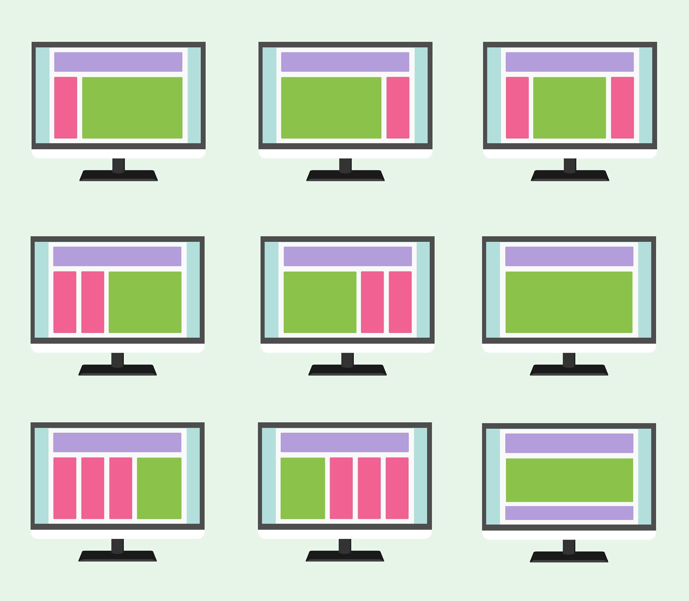

Indice
Bienvenida
Hola a todos! Mi nombre es Javi y estoy en 1º de ASIR
Esta es mi segunda práctica de Lenguaje de Marcas y aquí voy a aplicar todos los conceptos de HTML aprendidos hasta ahora.
Lo primero de todo es un índice para practicar las listas desordenadas con "ul" y enlaces en la propia página, este está más arriba si os habéis fijado.
Como podéis observar, durante toda la página vereis que hago uso de las etiquetas "strong" (negrita),"em" (cursiva) y "u" (subrayado).
Imágenes
En esta sección voy a mostrar 3 imágenes de pixabay ya optimizadas con tinyjpg.com y compressor.io, relacionadas con el diseño web, para ello, utilizaremos la etiqueta "img src=ruta-a-la-imagen", ademas de otras para darle estilo, como "width" (anchura) y "height" (altura):
